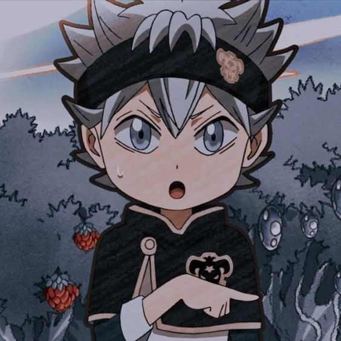
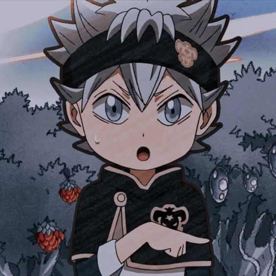

Asta Staria
 

Asta Staria, the protagonist of Black Clover, is a character whose indomitable spirit and unwavering determination resonate with fans around the world. B orn without magic in a world where magic defines one's worth, Asta's journey is a t estament to the power of sheer will and unyielding perseverance. His boundless optimism, coup led with an unbreakable commitment to protect those he cares about, makes him an inspirational figure. Despite facing seemingly insurmountable challenges and often being underestimated by others, Asta continues to rise above, proving that true strength comes from the heart. His friendship with Yuno, his dedication to the Black Bulls, and his dream of becoming the Wizard King showcase a character whose warmth and kindness shine even in the darkest moments. Asta Staria is not just a hero; he is a beacon of hope , teaching us that no matter the odds, the power of resilience and a compassionate heart can overcome anything.
To know more about my favorate person,click More about Asta Staria